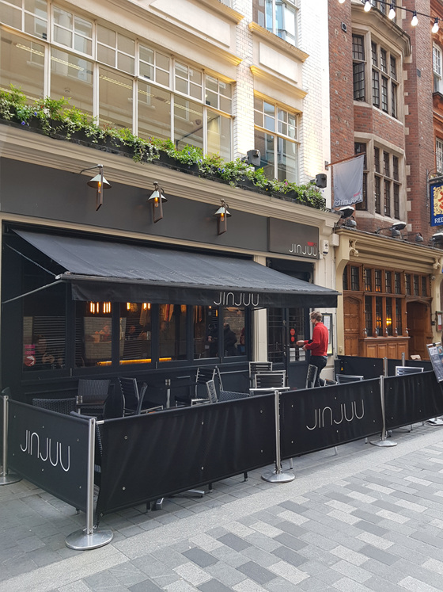
1월31일 - 2월8일 영국 & 아이슬란드 다녀왔습니다.
블로그에 후기를 올리고 있는데
3일차에 다녀온 진주 레스토랑 포스팅 합니다 :)
위치는 옥스포드서커스 역에서 가깝습니다.
리버티백화점 / 카나비스트릿 쪽 찾기 쉽습니당
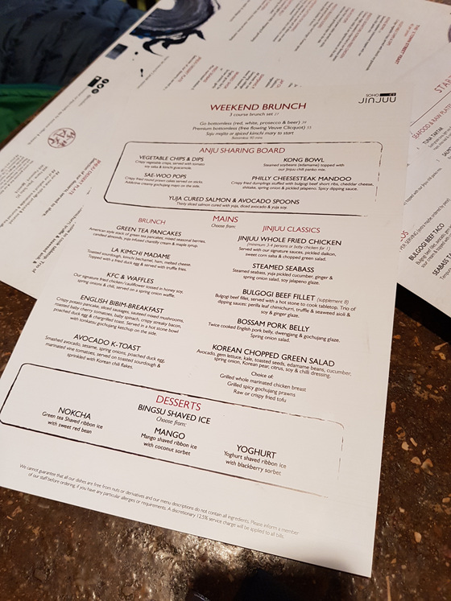
토요일 12.30 방문
Weekend Brunch
KFC & Waffles 를 주문하려 했으나 재료가 없다하여
대신 English Bibim Breakfast / La Kimchi Madame 주문 :)
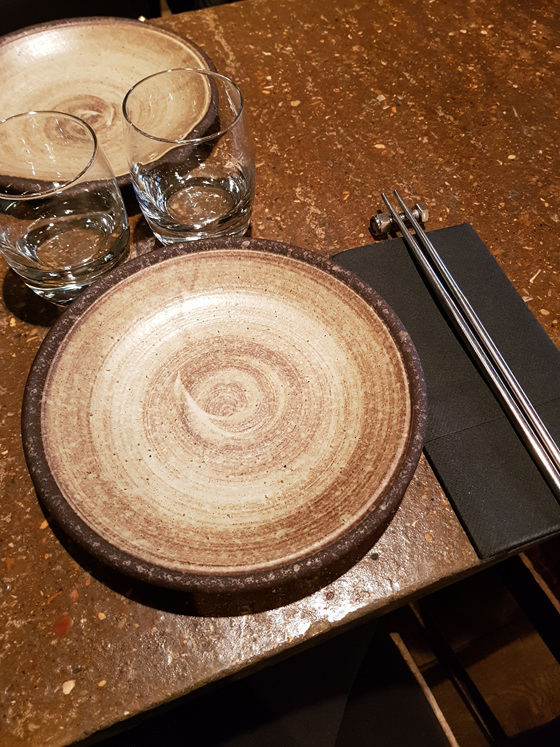
젓가락 받침대 귀엽습니다.
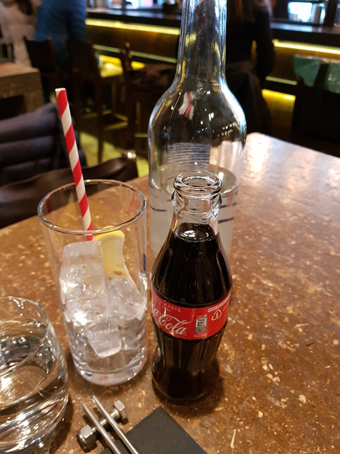
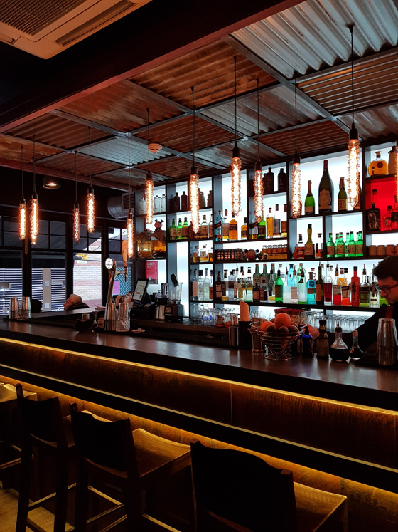
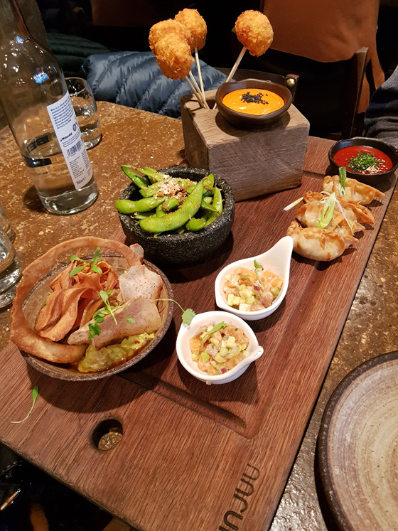
스타터
뭐하나 빠짐없이 다 맛있었어요 :)
상단의 두 소스가 10%의 고추장 매운맛이 들어있습니다.
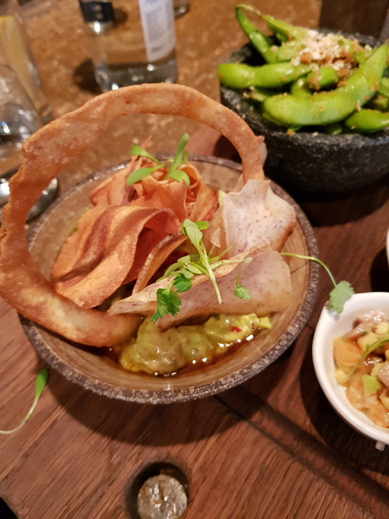
야채 칩 & 딥
토마토 소이 살사 & 김치 과카몰리
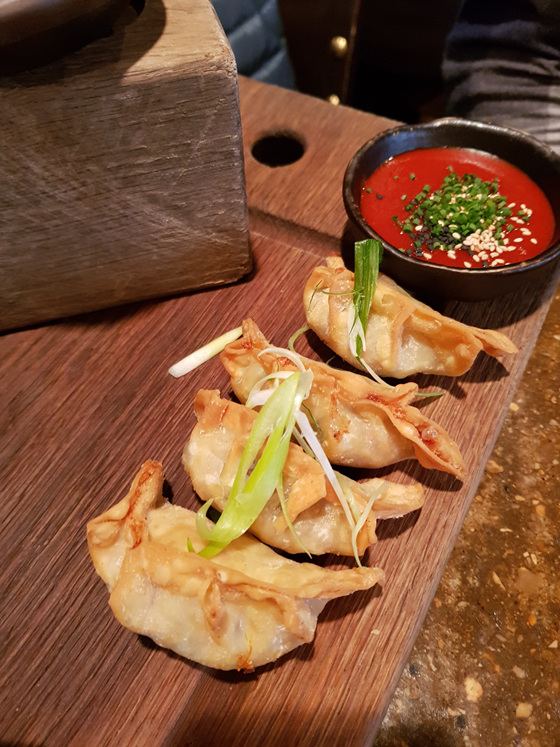
최고 맘에든건 역시 이 만두
필리 치즈스테이크 만두
군만두 안에 불고기 와 체다치즈가 들어있습니당.
디핑소스도 특이해요 :)
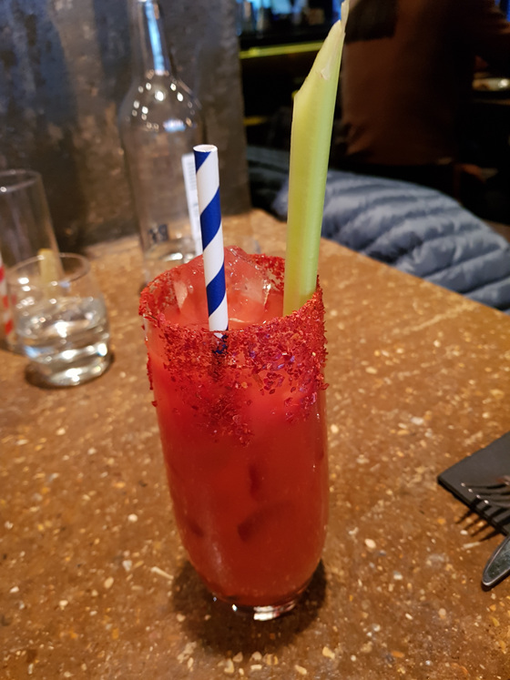
호기심에 주문한 Spiced Kimchi Mary 칵테일
Jinjuu’s bespoke kimchi spice mix, celery & black pepper infused soju,gochugaru (chili flakes) & fresh tomato juice.
소주 빼고 달라고 했습니다.
묵직해서 메인요리랑 같이먹기엔 별로에용
미리 주문할걸 :p
가격은 10.5 파운드 인데
나중에 계산할 때 보니 살짝 적게 적혀있었습니다 (6파운드 였던걸로 기억)
소주 빼고 달라고 해서 그런가? ^^
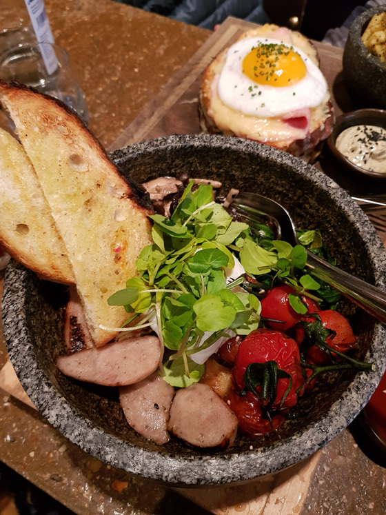
English Bibim-Breakfast
한국 돌솥에 잉글리시 블렉퍼스트 (감자 팬케이크/소세지/버섯/체리토마토 구운것/시금치/베이컨/수란/토스트)를
담아 내옵니다.
비빔밥 스타일로 비벼서 떠먹는데 맛있어요;; 신기함 ㅋㅋㅋㅋㅋㅋㅋ
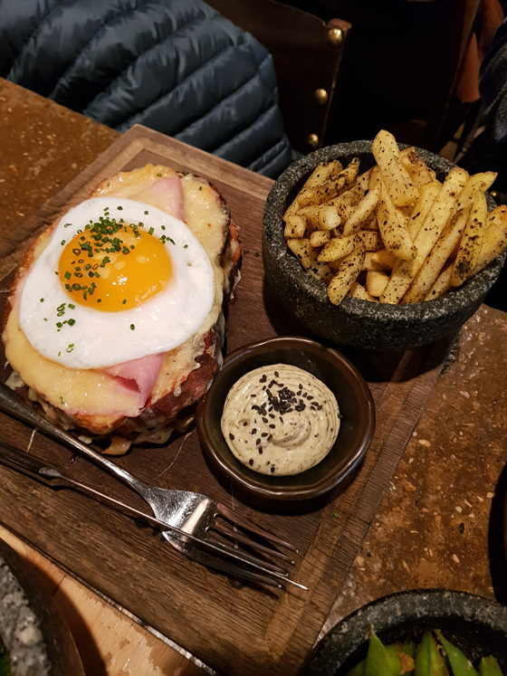
La Kimchi Madame
크로크마담 - 김치 베샤멜
김치맛이 10~15% 느껴지는데 묘하게 어울려서 신기한 메뉴
프라이랑 같이 나온 소스가 맘에들었습니다. 한국식 매운맛이 살짝 나요.
이 레스토랑의 강점은 메뉴의 독특함인거 같습니다.
예약할 때 이용한 오픈테이블 사이트에서도 탑 태그중 하나가
Creative Cuisine 이었어요
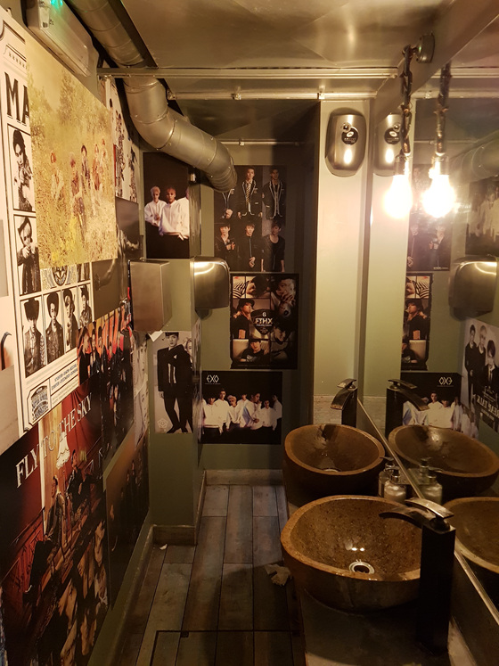
지하 화장실은 케이팝 포스터가 잔뜩 ㅋㅋ
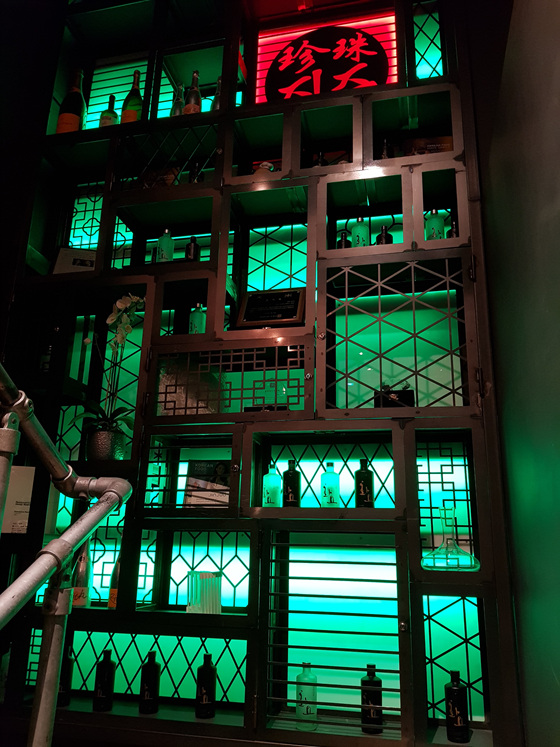
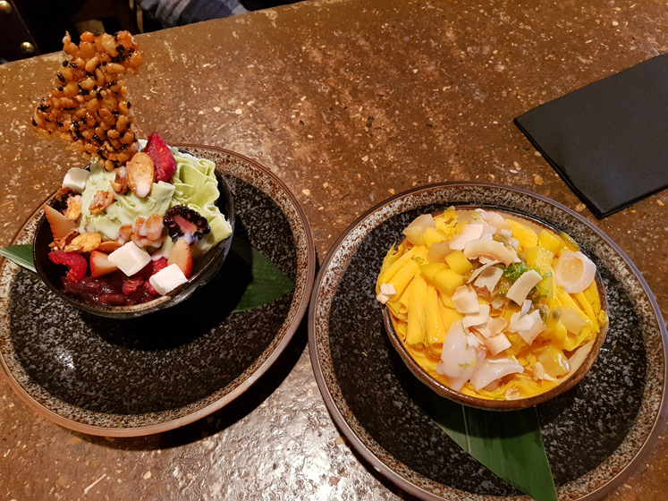
디저트
녹차 / 망고 빙수
녹차빙수 데코는 웹사이트 사진에서 보던 것 보다 실물이 훨 예뻤습니당
스타터랑 메인으로 이미 배가 불렀는데
디저트도 생각보다 양이 많습니다 (하지만 다 먹음 ㅋㅋ)
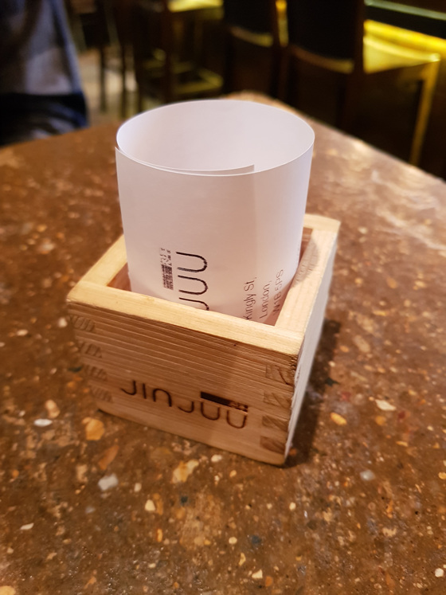
빌 가져달라 하면 요래 귀여운 사케잔에 담아 나옵니다 :)
두명이서 약 75파운드 정도 나온거 같아요
잘 다녀왔습니다
다음에 가게되면 다른메뉴도 도전해 보고 싶네용